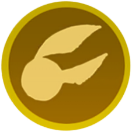
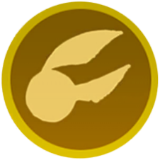

Page 1: World Cup Grounds
Quidditch World Cup
Since 1473 the Quidditch World Cup has been the wizarding world's premier international sporting event. Held every four years, national teams from across the globe battle for the prestigious title of world champions.
Return to: International Confederation of Wizards' Quidditch Committee
Magical Megaphone
Similar to a Muggle megaphone, this megaphone is enchanted to amplify sound even further than its Muggle counterpart. Magical Megaphones can fill large areas with sound and are a favoured method of amplification at wizarding sporting events.
Return to: Department of Magical Games and Sports
Quaffle
Quaffles are 12 inch, red, oddly-shaped leather balls that are thrown through large hoops in order to score points in Quidditch. Each time a Quaffle is thrown through a hoop, the throwing team scores 10 points.
Return to: Puddlemere United
Chudley Cannons Player
A Chaser for the Chudley Cannons Quidditch team, whose disappearance meant missing some much-needed practice.
Return to: Chudley, England

Gobstone Set
A messy children's game similar to marbles where, when a player loses a point, a gobstone will spray putrid liquid on the player. Despite its reputation as a children's game, the Gobstones World Championship is taken very seriously by afficionados.
Return to: Slytherin Common Room
Page 2: Hogwarts Quidditch Pitch
Quidditch Pitch Stands
To be closer to the competition, the wooden seating towers of the Hogwarts Quidditch Pitch loom high above the ground. The stands in between are decorated with the house colors and mascots of the two teams participating in the match.
Return to: Hogwarts Quidditch Pitch
Golden Snitch
The smallest ball in Quidditch, the autonomously flying Golden Snitch is worth 150 points and immediately ends the match when caught. Each team has a single Seeker and they are the only players allowed to capture the Golden Snitch.
Return to: The Chudley Cannons
House of Exploding Snap Cards
Exploding Snap is a popular card game where the cards periodically explode in the players' hands. The game can be played solo or in groups and is mildly dangerous. It features alternative rulesets such as a Bavarian Rules variant.
Return to: Hufflepuff Common Room
Bludger
Bludgers are 10 inch iron balls that magically fly about a Quidditch pitch, knocking players from their brooms. Two Beaters - players equipped with iron bats - spend the match protecting their Teammates by knocking bludgers away.
Return to: Quality Quidditch Supplies
Beater's Bat
In Quidditch, Beaters use these magically reinforced bats to redirect the animated iron Bludgers away from their fellow Teammates and (preferably) towards the rival team. Bludgers were once made of rock, but their tendency to shatter inspired a redesign.
Return to: Quality Quidditch Supplies
Quidditch Keeper Ron
Long-shot Ron Weasley was appointed Keeper of Gryffindor's Quidditch team after an uneven tryout during his fifth year at Hogwarts. He eventually overcame his limitations and helped them win the Quidditch Cup that same year.
Return to: Hogwarts Quidditch Pitch, 1995
Page 3: Triwizard Maze
Triwizard Cup
The Triwizard Cup is the prize given to the wizarding school whose selected champion wins the prestigious and highly dangerous Triwizard Tournament, a competition between the three largest European wizarding schools: Durmstrang, Beauxbatons, and Hogwarts.
Return to: Hogwarts Triwizard Maze, 1995
Quidditch Through the Ages Book
Quidditch Through the Ages is the definitive source for the history, rules, and evolution of the wizarding sport. Hogwarts's copy is protected by a Thief's Curse, due to its popularity among students.
Return to: Oliver Wood
Goblet of Fire
The Goblet of Fire is used to select champions representing each of the three wizarding schools that participate in the dangerous Triwizard Tournament. Once chosen, champions are magically bound to compete in the tournament, and cannot withdraw.
Return to: Department of Magical Games and Sports
Quidditch Captain Harry Potter
Quidditch prodigy Harry Potter was discovered whilst breaking the rules during flying class. The first year Seeker eventually grew to become Captain of the Gryffindor Quidditch team by his sixth year at Hogwarts.
Return to: Hogwarts Quidditch Pitch, 1996
Nimbus 2000
Produced by the Nimbus Racing Broom Company, the Nimbus 2000 was the fastest competitive broomstick on the market when released. That lasted only a short time, as the broom's speed was surpassed by the Nimbus 2001 the following year.
Return to: Hogwarts Quidditch Pitch


 
